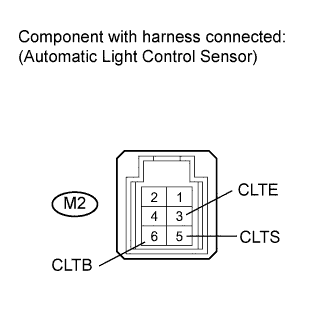
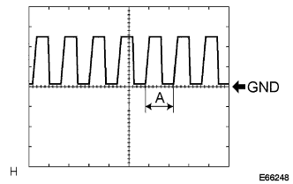

AUTOMATIC LIGHT CONTROL SENSOR > ON-VEHICLE INSPECTION |
| 1. INSPECT AUTOMATIC LIGHT CONTROL SENSOR |
 |
Measure the voltage according to the value(s) in the table below.
| Tester Connection | Switch Condition | Specified Condition |
| M2-6 (CLTB) - M2-3 (CLTE) | Engine switch on (IG) | 11 to 14 V |
Measure the resistance according to the value(s) in the table below.
| Tester Connection | Switch Condition | Specified Condition |
| M2-3 (CLTE) - Body ground | Always | Below 1 Ω |
Reconnect the M2 sensor connector.
 |
Check the waveform of the M2 sensor connector.
| Tester Connection | Tool Setting | Switch Condition | Specified Condition |
| M2-3 (CLTE) - M2-5 (CLTS) | 5 V/DIV., 5 msec./ DIV. | Engine switch on (IG), Headlight dimmer switch on AUTO | Correct waveform is as shown |